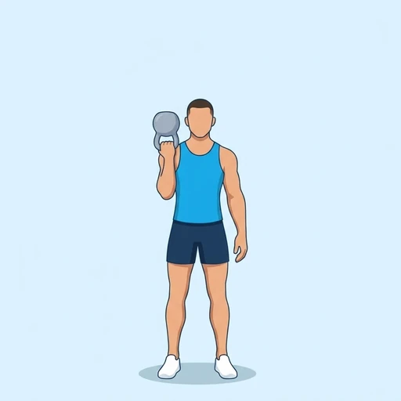

Kettlebell Bottoms-Up Hold
A one-arm hold in which the kettlebell is held upside down by the handle at shoulder height, with the bell above your hand. Keeping the bell level demands a very firm grip and constant work from the forearm and the shoulder, which makes this a strong test of wrist and shoulder stability.
Shoulders · Kettlebell · Advanced

Muscles worked by the Kettlebell Bottoms-Up Hold
Primary
Secondary
Also called: front deltoid, anterior delt, front delt, anterior deltoid, wrist flexors, flexor carpi.
Equipment
Also called: kb, cast iron kettlebell, competition kettlebell, girya.
How to do the Kettlebell Bottoms-Up Hold
- Clean a kettlebell to your shoulder and flip it so that the bell points up and the handle sits in your fist.
- Stand with your feet about shoulder-width apart and your free arm relaxed at your side.
- Keep your forearm vertical and your elbow close to your ribs, with the bell directly above your hand.
- Grip the handle firmly and keep your wrist straight, as if you were balancing a cup.
- Hold the bell steady for the planned time, breathing slowly and keeping your shoulder down.
- Lower the kettlebell with control, turn it the right way up and switch arms.
Form tips
- Start with a very light bell; a weight that feels easy when held the normal way can be hard to keep level.
- Keep the shoulder down and the wrist stacked over the forearm; if the bell tips, reset the position before it falls.
- Stand in a clear space, away from people and furniture, in case the bell tips.
At a glance
| Body part | Shoulders |
|---|---|
| Category | Strength |
| Force type | Static |
| Mechanic | Compound |
| Difficulty | Advanced |
| Equipment | Kettlebell |
| Goals | Strength, Rehabilitation |
| Tags | Shoulder safe, Shoulder stability, Grip focus |
| MET | 6.0 (metabolic equivalent, for calorie estimates) |
| Unilateral | Yes |
| Bodyweight | No |
| Dataset id | kettlebell-bottoms-up-hold |
Kettlebell Bottoms-Up Hold in German & Spanish
| German | Kettlebell-Bottoms-Up-Halt |
|---|---|
| Spanish | Sostén con Pesa Rusa Boca Abajo |
Descriptions, instructions and tips ship in all three languages in the JSON.
Related exercises
Exercise data (JSON)
The record below is exactly what exercises.json ships for this exercise — names, descriptions, instructions and tips in English, German and Spanish.
{
"id": "kettlebell-bottoms-up-hold",
"name_en": "Kettlebell Bottoms-Up Hold",
"name_de": "Kettlebell-Bottoms-Up-Halt",
"name_es": "Sostén con Pesa Rusa Boca Abajo",
"description_en": "A one-arm hold in which the kettlebell is held upside down by the handle at shoulder height, with the bell above your hand. Keeping the bell level demands a very firm grip and constant work from the forearm and the shoulder, which makes this a strong test of wrist and shoulder stability.",
"description_de": "Ein einarmiger Halt, bei dem die Kettlebell kopfüber am Griff auf Schulterhöhe gehalten wird, die Kugel über deiner Hand. Die Kugel waagerecht zu halten verlangt einen sehr festen Griff und ständige Arbeit von Unterarm und Schulter; das ist ein starker Test für die Stabilität von Handgelenk und Schulter.",
"description_es": "Un aguante a un brazo en el que la pesa rusa se sostiene boca abajo por el asa a la altura del hombro, con la campana encima de la mano. Mantener la campana nivelada exige un agarre muy firme y un trabajo constante del antebrazo y el hombro, lo que lo convierte en una gran prueba de estabilidad de muñeca y hombro.",
"category": "strength",
"force_type": "static",
"mechanic": "compound",
"difficulty": "advanced",
"equipment": "kettlebell",
"body_part": "shoulders",
"primary_muscles": [
"anterior_deltoid",
"forearm_flexors"
],
"secondary_muscles": [
"lateral_deltoid",
"obliques",
"serratus_anterior"
],
"goals": [
"strength",
"rehabilitation"
],
"tags": [
"shoulder_safe",
"shoulder_stability",
"grip_focus"
],
"variation_group": "overhead-press",
"is_unilateral": true,
"is_bodyweight": false,
"instructions_en": [
"Clean a kettlebell to your shoulder and flip it so that the bell points up and the handle sits in your fist.",
"Stand with your feet about shoulder-width apart and your free arm relaxed at your side.",
"Keep your forearm vertical and your elbow close to your ribs, with the bell directly above your hand.",
"Grip the handle firmly and keep your wrist straight, as if you were balancing a cup.",
"Hold the bell steady for the planned time, breathing slowly and keeping your shoulder down.",
"Lower the kettlebell with control, turn it the right way up and switch arms."
],
"instructions_de": [
"Bringe eine Kettlebell per Clean zur Schulter und drehe sie so um, dass die Kugel nach oben zeigt und der Griff in deiner Faust liegt.",
"Stehe mit etwa schulterbreit stehenden Füßen und dem freien Arm entspannt seitlich am Körper.",
"Halte den Unterarm senkrecht und den Ellbogen nah an den Rippen, die Kugel direkt über deiner Hand.",
"Greife den Griff fest und halte das Handgelenk gerade, als würdest du eine Tasse balancieren.",
"Halte die Kugel für die geplante Zeit ruhig, atme dabei langsam und halte die Schulter unten.",
"Senke die Kettlebell kontrolliert ab, drehe sie wieder richtig herum und wechsle den Arm."
],
"instructions_es": [
"Haz una cargada con la pesa rusa hasta el hombro y dale la vuelta, de modo que la campana apunte hacia arriba y el asa quede en tu puño.",
"Colócate con los pies separados aproximadamente al ancho de los hombros y el brazo libre relajado a un costado.",
"Mantén el antebrazo vertical y el codo cerca de las costillas, con la campana justo encima de la mano.",
"Agarra el asa con firmeza y mantén la muñeca recta, como si estuvieras equilibrando una taza.",
"Mantén la campana estable durante el tiempo previsto, respirando despacio y con el hombro bajo.",
"Baja la pesa rusa con control, ponla de nuevo en su posición normal y cambia de brazo."
],
"tips_en": [
"Start with a very light bell; a weight that feels easy when held the normal way can be hard to keep level.",
"Keep the shoulder down and the wrist stacked over the forearm; if the bell tips, reset the position before it falls.",
"Stand in a clear space, away from people and furniture, in case the bell tips."
],
"tips_de": [
"Beginne mit einer sehr leichten Kugel; ein Gewicht, das sich in der normalen Haltung leicht anfühlt, kann schwer waagerecht zu halten sein.",
"Halte die Schulter unten und das Handgelenk über dem Unterarm gestapelt; kippt die Kugel, korrigiere die Position, bevor sie fällt.",
"Stelle dich in einen freien Bereich, weg von Menschen und Möbeln, falls die Kugel kippt."
],
"tips_es": [
"Empieza con una campana muy ligera; un peso que parece fácil sujetado de la forma normal puede ser difícil de mantener nivelado.",
"Mantén el hombro bajo y la muñeca alineada sobre el antebrazo; si la campana se inclina, corrige la posición antes de que caiga.",
"Colócate en un espacio despejado, lejos de personas y muebles, por si la campana se inclina."
],
"met": 6.0,
"images": {
"flat": {
"main": "images/flat/kettlebell-bottoms-up-hold-main.webp"
}
}
}Fetch just this exercise
const { exercises } = await fetch(
"https://exercise-dataset.com/exercises.json"
).then(r => r.json());
const ex = exercises.find(e => e.id === "kettlebell-bottoms-up-hold");Free for personal and commercial in-app use with attribution (“Exercise data by RepDB”) — see the license and ready-made attribution snippets. Redistributing the data as a dataset or API is not permitted.